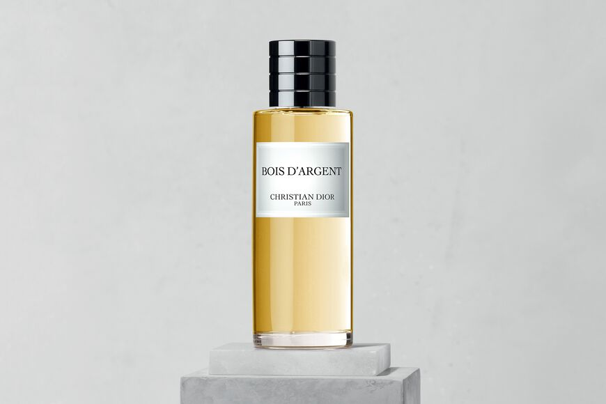

|
Dioramour sonne à l'oreille comme une déclaration d'amour en un mot. Le charme du parfum se lit entre les lignes de ce nom, à la symbolique évocatrice chez Dior. Enivrant et profond comme un amoureux passionné, Dioramour dévoile aussi une facette de sa personnalité plus douce et romantique. Une romance olfactive aux sentiments affûtés. Dioramour est un parfum réconfortant, comme un rayon de soleil matinal qui réveille en douceur. Un dégradé de rose clair, comme le rose qui monte aux joues à la pensée de l'être aimé. Sensuel. Dioramour est l'image olfactive de la sensualité dans son interprétation la plus raffinée, la plus élégante. Dioramour laisse dans son sillage les effluves d'une note irisée délicate et d'un jasmin animal, à l'image d'un baiser volé. Dioramour est une fragrance à l'intensité persistante, au sillage reconnaissable parmi mille. Un parfum aux notes olfactives composées comme des émotions à fleur de peau, entre la tendresse d'une note irisée et la passion animale du jasmin. |
|
Balade Sauvage est le parfum qui invite dès son évocation à imaginer une échappée à flanc d'une falaise, bordée de figuiers. La découverte d'une nature vierge. Le sillage de la fragrance Balade Sauvage est un mélange d'émotions brutes et naturelles, à l'image de ses notes hespéridées et boisées. Une création au caractère méditerranéen franc. À la vivacité acidulée des agrumes répondent les notes craquantes de lavande, comme un bouquet d'herbes aromatiques doucement séchées au soleil. La palette polychrome d'un paysage sauvage, où le blanc de la roche s'illumine des reflets dorés du soleil. Sensuel. Fraîche comme les branches d'un figuier animées par le vent, Balade Sauvage est une fragrance généreuse, aux notes olfactives de bergamote fraîche et de roche volcanique minérale. Comme les odeurs entêtantes des végétaux et des minéraux qui ponctuent le chemin d'une balade au grand air, les effluves du parfum Balade Sauvage dévoilent une intensité vivifiante. |
|
Bois d'Argent est la traduction olfactive d'une allure Dior. Un nom devenu iconique. C'est une fragrance mixte, qui crée sa propre histoire et invite à en faire de même.. Bois d'Argent est un parfum iconique et mystérieux. Féminin, masculin ? Il ne choisit pas : c'est un parfum qui attise l'envie et les curiosités. Bois d'Argent est un parfum contrasté. Son coeur d'iris est la lumière dans une fumée d'encens. Le blanc vaporeux d'une fumée d'encens, qui se marie aux reflets dorés du coeur d'iris. Sensuel. Bois d'Argent conjugue l'iris au masculin et l'encens au féminin. Son parfum incite à revêtir une élégance douce. Bois d'Argent est un parfum puissant que l'on aime sentir au plus près de soi. Sa sensualité enveloppée d'une fumée mystique confère à la fragrance une personnalité marquante, qui ne s'oublie pas. |
 |